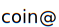
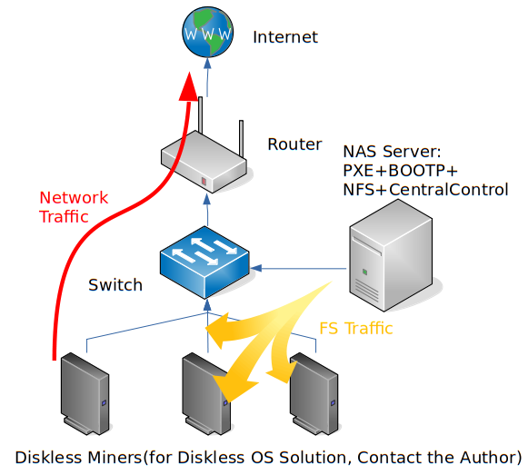
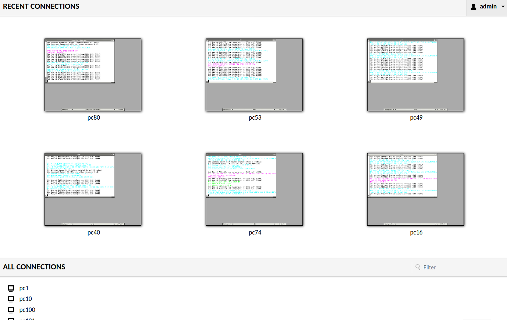
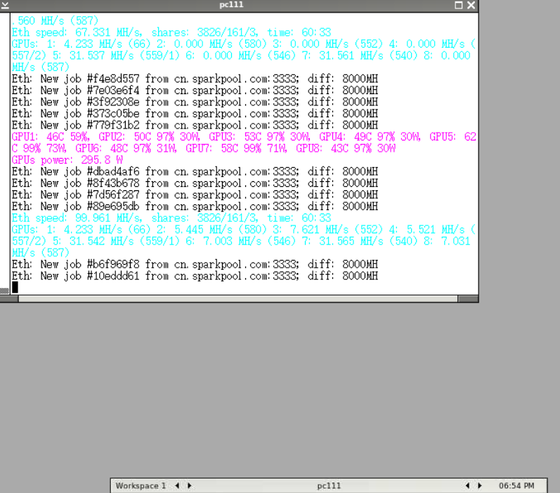

Diskless Mining Solution for Large Scale Farms
We provide a commercial Diskless Mining Solution for our clients, especially large scale farms. We will deploy diskless mining operation system via a central server. All the miners DO NOT need to install an HDD, SSD or USB drive, since their OS including the mining software are provisioned via the central server.
Benifits of such a solution:
- Save the cost of HDD, SSD or USB drive. And additionally the power consumption of the drive.
- Easy for maintenance. Software between all miners are strictly the same. There is no need to install their OS separately.
- Central monitor service for all the miners. When a miner becomes offline in the pool, it will be detected and brought up automatically to reduce down time.
- A unified monitor GUI (Graphics User Interface) to monitor the working status of all your miners.
- In case of unstable fluctuation of price for the mining cryptocurrency, you can swith to mine another coin more quickly.
- Low capability requirement for the field maintenance worker. He just need to maintain the hardware.
- Linux Diskless Mining Solution has lower requirement: 2G RAM for miners; 4G RAM and 10G SSD for server; faster booting speed and more stable than Windows solutions
- Linux Diskless Mining Solution doesn't need a SAN network. 1 Gbps ethernet is enough. All the miners share the same operation system image. In contrast, Windows diskless solution require separate iSCSI configuration for each miner.
- Deployment of nofee-ng with no extra charge.
nofee-ngcan refund DevFee from the mining software to your own wallet which can be different from the main mining wallet.
If you're interested in this diskless mining solution, please contanct me via devdoc.net
Network topology of diskless mining solution/无盘挖矿解决方案的网络拓扑：

Central monitor console/中央监控控制台：

Remote control for miner/矿机远程控制：

大规模矿场无盘挖矿解决方案
我们为客户（特别是大规模的矿场）提供商业化的无盘挖矿解决方案。该方案将通过中央服务器为矿机提供无盘挖矿的操作系统。所有的矿机无需安装硬盘（HDD、SSD）或U盘，因为包括挖矿软件在内的整个操作系统均通过中央服务器进行下发。
无盘挖矿的优点：
- 节省硬盘价格及硬盘功耗产生的电费
- 易于维护，所有矿机的系统保持高度一致，无需单独安装矿机操作系统
- 可自动监控矿池中矿机状态，对因软件问题引起的矿机掉线可自动重启，重新挖矿，减少停机时间
- 具有统一的图形监控界面可监控各个矿机的实时挖矿情况
- 对于币值波动，可快速切换挖矿币种
- 对现场维护人员要求低，只需负责更换硬件（如有损坏）即可
- Linux无盘方案对系统的要求低度：矿机内存2G；服务器内存4G，硬盘10G即可；矿机启动速度远比Windows快，系统更稳定
- Linux无盘方案无需专用的SAN网络，千兆以太网即可，且所有矿机共享同一个系统镜像，无需像Windows无盘方案一样单独为每台矿机配iSCSI
- 可以免费部署 nofee-ng 。
nofee-ng可以将挖矿软件所劫持的算力（DevFee）返还到你的钱包中，该钱包可以不同于挖矿的主钱包。
如果你对无盘挖矿方案感兴趣，请联系 devdoc.net